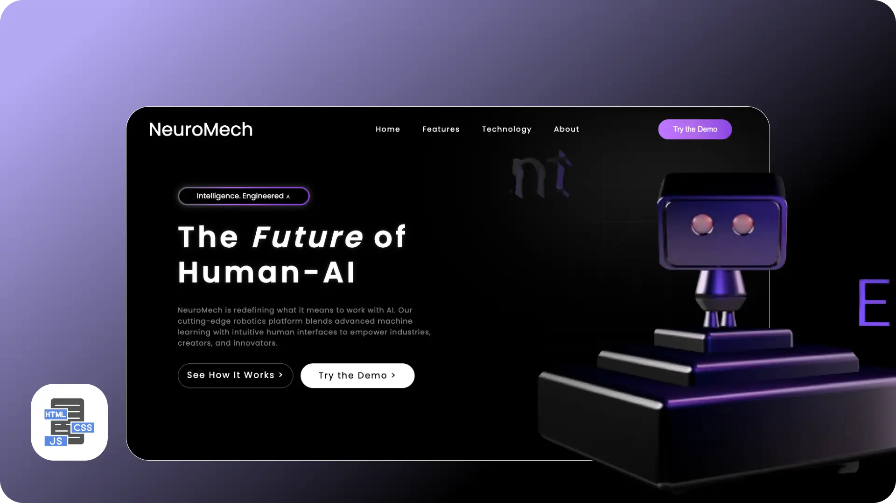
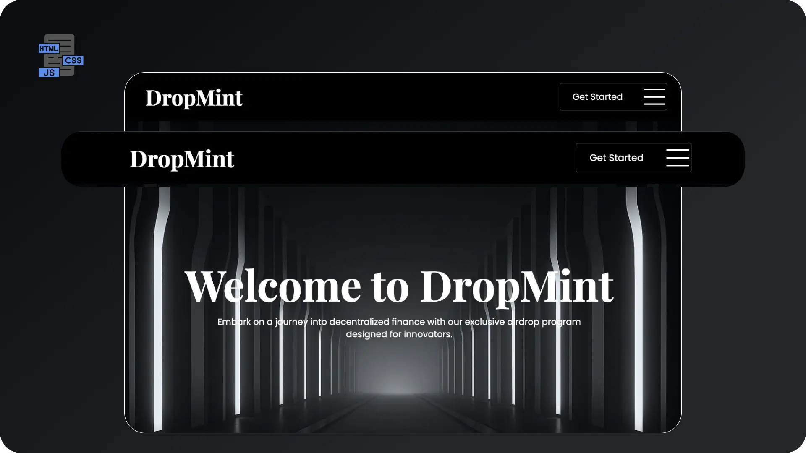
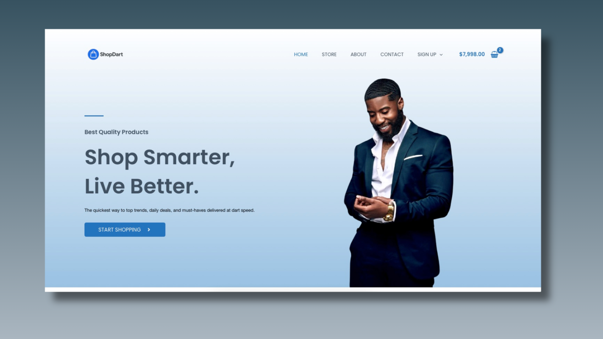
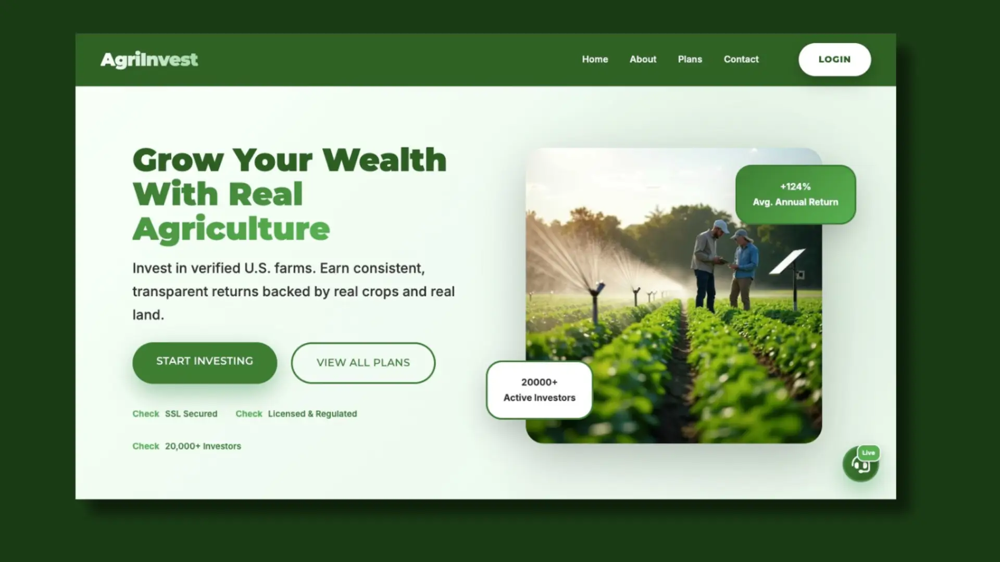

Projects

NeuroMech 3D Interactive Landing Page
Overview: A futuristic robotics landing page designed to showcase human–AI collaboration through immersive 3D interaction and clean UI.
Problem: Most AI websites are either too technical or visually uninspiring, leading to low engagement.
Goal: Create an engaging experience that simplifies complex ideas while capturing attention instantly.
Solution: Built a visually immersive interface using a real-time 3D robot, bold typography, and clear call-to-actions to guide users.
Key Highlights:
• Interactive 3D hero (Spline)
• Clean visual hierarchy
• Lightweight animations for performance
• Clear user flow and navigation

DropMint – DeFi Airdrop Platform
Overview: A decentralized platform designed to simplify crypto airdrops and community onboarding.
Problem: Many DeFi platforms overwhelm users with complexity and lack trust signals.
Goal: Design a clean, trustworthy interface that makes crypto participation simple.
Solution: Structured layout with clear messaging, roadmap visualization, and onboarding-focused sections.
Key Highlights:
• Simplified crypto messaging
• Visual roadmap
• FAQ for user clarity
• Strong conversion-focused CTAs
.png)
NestVibe Realty Website
Overview: A modern real estate platform built to simplify property search and improve user trust.
Problem: Property websites are often cluttered and hard to navigate.
Goal: Create a clean, intuitive browsing experience.
Solution: Designed a structured layout with filters, featured listings, and trust-building sections.
Key Highlights:
• Smart filtering system
• Clean layout & hierarchy
• Testimonials & trust elements
• Fully responsive design

ShopDart – Multi Vendor E-commerce
Overview: A live e-commerce platform delivering a smooth and efficient multi-vendor shopping experience.
Problem: Many e-commerce platforms suffer from poor navigation and checkout friction.
Goal: Improve user flow and increase conversion.
Solution: Designed a clean interface with intuitive navigation and real-time cart updates.
Key Highlights:
• Clear product hierarchy
• Real-time cart feedback
• Smooth navigation flow
• Conversion-focused design
.png)
Yorùbá Mobile Keyboard – Inclusive UX
Overview: A mobile keyboard designed to support seamless typing in both English and Yorùbá.
Problem: Indigenous languages are poorly supported on most smartphones.
Goal: Enable fast, natural typing without switching apps.
Solution: Designed a dual-language keyboard with quick toggles and long-press diacritics.
Key Highlights:
• EN ⇆ YOR quick switch
• Tone mark support
• Familiar QWERTY layout
• Scalable for other languages

AgroInvestment — Agricultural Investment Platform
Project Overview: AgroInvestment is an agriculture-based investment platform that presents users with opportunities to invest in farming, crop production, and agribusiness ventures. The platform is positioned as a way for individuals to earn returns by funding agricultural projects.
Problem: Many agricultural investment platforms online struggle with trust, clarity, and transparency. Users are often presented with high-return promises but little explanation of how the system works. Research shows that some platforms in this space raise red flags such as low credibility, unclear ownership, and poor user experience, which can make users hesitant to invest.
Goal: Redesign and structure a landing experience that:
• Clearly explains how agricultural investment works
• Builds user trust through transparency and structure
• Simplifies complex financial concepts for everyday users
• Encourages safe and informed participation
Solution: Designed a clean, conversion-focused landing page with:
• A strong hero section explaining “what the platform does” in simple terms
• Structured investment plans with clear breakdowns (duration, returns, risk level)
• Trust-building sections like FAQs, testimonials, and transparency blocks
• Step-by-step “How It Works” flow to guide new users
• Clear CTAs such as “Start Investing” and “Learn More”
Case Study: The design focuses heavily on user trust and clarity, which are critical in financial and investment platforms.
Many similar platforms fail due to lack of credibility signals, so this solution prioritizes:
• Visual hierarchy to highlight key information
• Simple language instead of technical jargon
• Transparency-driven UI sections
• Mobile-friendly layout for accessibility
The result is a platform experience that feels more reliable, understandable, and user-centered, improving both engagement and conversion potential.

Certified Texas Plumbing — Service-Based Business Website
Project Overview: Certified Texas Plumbing is a service-based website designed for a local plumbing company. The platform focuses on helping homeowners quickly understand available services, build trust, and request plumbing assistance without friction.
Problem: Many plumbing websites suffer from poor structure, unclear messaging, and weak conversion paths. Users often struggle to:
• Find key services quickly
• Trust the company due to lack of credibility signals
• Take action (call, book, request service)
In competitive local markets, this leads to lost leads and high bounce rates.
Goal: Design a clean, high-converting service website that:
• Clearly communicates services and expertise
• Builds trust instantly with visitors
• Encourages fast action (call or booking)
• Works seamlessly across mobile and desktop
Solution: The website was structured using a conversion-focused layout:
• Strong hero section with bold headline and CTA (“Call Now”, “Get Service”)
• Clearly defined service categories (repairs, installations, inspections)
• Trust indicators such as experience, guarantees, and certifications
• Testimonials to reinforce credibility
• Simple contact flow to reduce friction for users needing urgent help
Case Study: The design follows proven service-based UX patterns where speed and trust are critical.
Plumbing services are often urgent, so the interface prioritizes:
• Immediate visibility of contact actions
• Clear service breakdown for quick decision-making
• Minimal distractions to guide users toward conversion
By combining strong visual hierarchy, responsive layout, and trust-driven sections, the website improves user confidence and increases the likelihood of inquiries and service bookings.
Let's Collaborate
👨💻 UX/UI Designer • 🎨 Figma • 🚀 Webflow • 🧠 Design Thinking • 📱 Responsive Design • 🔧 Prototyping • Available for freelance work! Let’s collaborate on your next project.